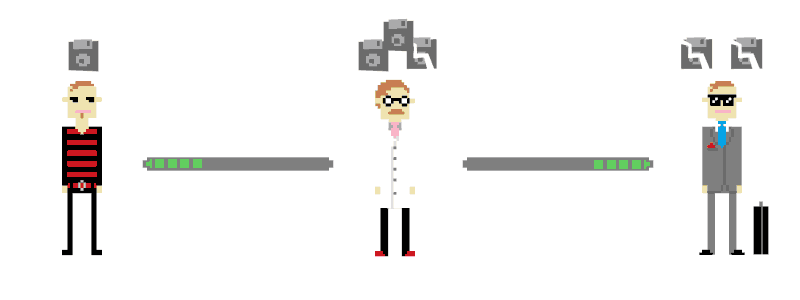
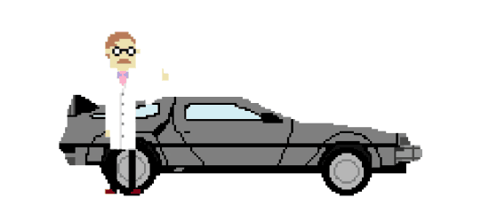
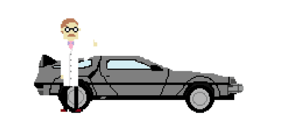

Comparison_
We compared the icons that you chose earlier with a database called Open Data Nederland in order to give you more information about the things you (apparently) find important and the reports on those subjects the government has released unto the web. Fair enough, the database is primarily focused on the Netherlands, but they just have a splendid initiative in the field of open data.

Problem!
...Or so they claim... We would have loved to tell you more about {{ vote.concepts[0]}}, {{ vote.concepts[1]}} and {{vote.concepts[2]}} in the Netherlands, but the data from Open Overheid at our disposal is highly lacking. As you can see in the obviously totally awesome bar chart below, the amount of working links in that database is slightly... disappointing. To say the least.
Future_
We hope that in the not-to-distant future, the government will work a bit harder on structuring their information. That way the information we supply to you is more reliable, more valid and of course simply more. We also hope that the future will bring similar initiatives all over Europe (and perhaps the world?), so we can supply you with even more complete data!
 
